О себе
Я человек интереса. Если мне что-то интересно, я погружаюсь в это на полную и довожу до результата. Если нет, делаю минимум, и я это за собой знаю. Когда во мне что-то «щёлкает», могу сильно собраться и сделать дело как следует.
Друзья говорят, что я добрый и разумный, и ещё что во мне есть лёгкость и чувство юмора. Для близких я надёжный друг. Чтобы понять меня по-настоящему, со мной нужно пообщаться (это описание не придумано мной, это мнение моих друзей и знакомых).
Web3
Здесь собраны самые крупные и запоминающиеся проекты. Небольшие сделки меньше $500 я не включал, кроме одной истории, которая запомнилась. Работали мы вдвоём: напарник искал проекты и отвечал за ресерч, а я занимался фермой аккаунтов. Ещё у нас были воркеры (помощники): мы подключали их в проектах, где whitelist можно было получить за несложные задания, с которыми они могли справиться.
NFT и whitelist
Whitelist — список людей, которых допускают к покупке NFT или монет проекта раньше остальных. Это как предзаказ нового iPhone: пока он не вышел в магазинах, купить его можно только у производителя, по цене, которую назначил проект.
Купить NFT у самого проекта на запуске называют mint (чеканка). Потом NFT продают на маркетплейсах (вторичный рынок), как iPhone с рук. Цена там заранее неизвестна: предзаказ может оказаться дешевле, а может и дороже, это риск. Поэтому берут проекты, где ждут, что цена на вторичном рынке вырастет, и перепродают.
В список попадают за выполнение заданий проекта: общение в чате (grind), арты, фан-арт, мемы, видео и другие творческие работы.
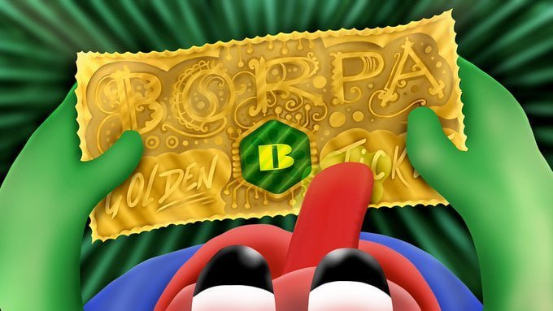
Получил три места в whitelist на запуск мемкоина $BORPA. Две WL продал другим участникам, в среднем по $1 800. Третью заминтил сам: вложил 1.21 SOL по цене $0.0056 за токен, получил 35 000 BORPA и продал их позже примерно за $3 600. Вкладывались вместе с напарником, прибыль поделили.
X (Twitter) ↗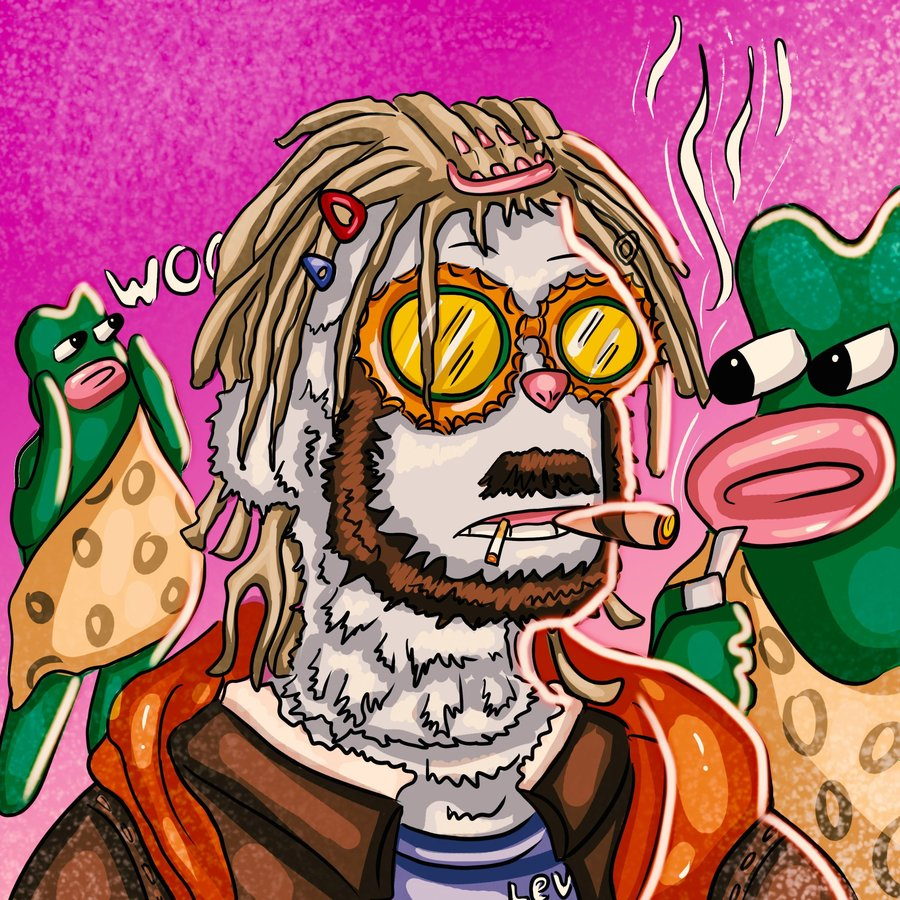
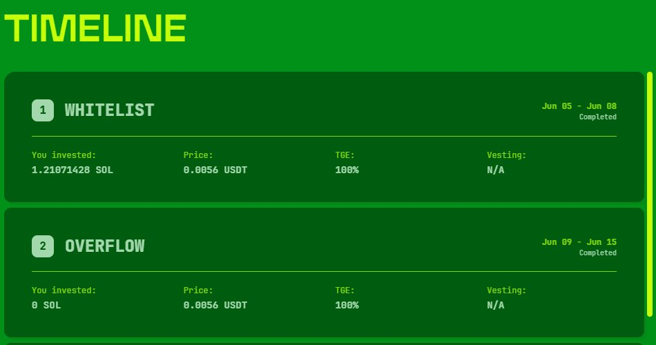
Blob — проект на Bitcoin. На обложке именно моя NFT, её продали за $2 000. Мы с напарником выиграли её в розыгрыше, где половина участвовавших аккаунтов была моя. Половина суммы моя.
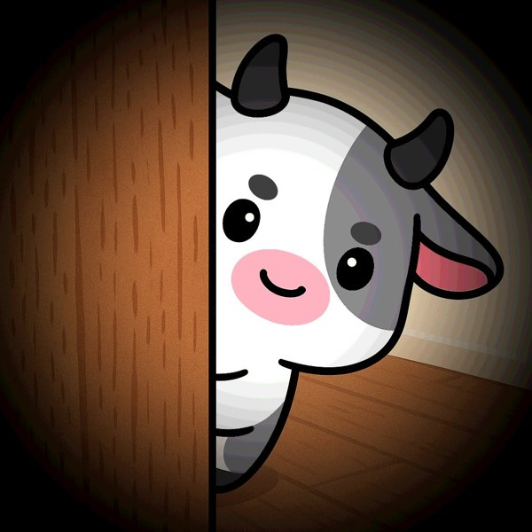
Собрали команду людей, которые выполняли задания проекта и получали места в whitelist, а мы забирали часть прибыли с каждого места. Параллельно получали места сами: я рисовал фан-арт по проекту и снимал видео для комьюнити. Всего продали больше 50 мест двух видов: Calfy (FCFS) и Lamoolist (гарантированный). На 12 мест заминтили NFT сами. Минт обходился примерно в $300 за штуку: почти всё уходило на газ в сети Ethereum. Вложили в минт около $3 600, а получили в 2.4 раза больше. Чистыми заработали около $6 100. Вкладывались вместе с напарником, прибыль поделили.
OpenSea ↗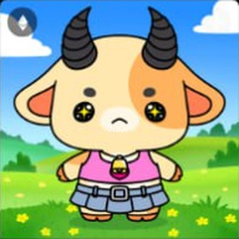
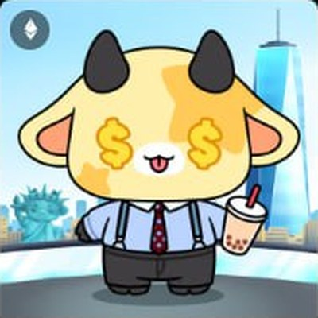
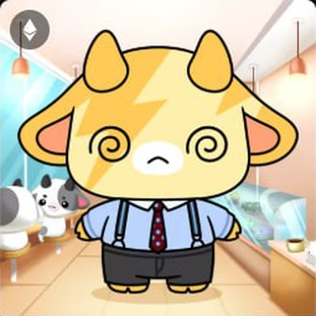
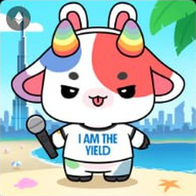
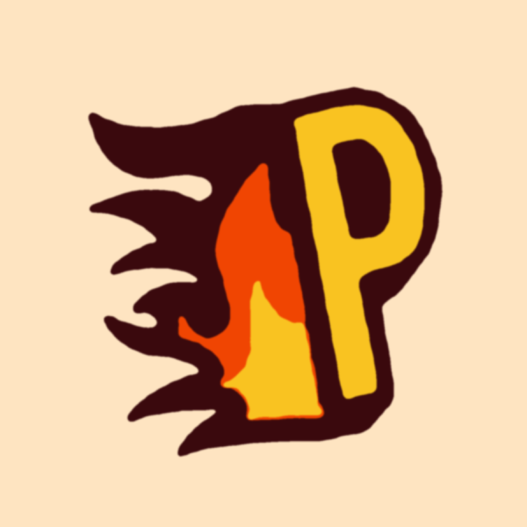
Места в whitelist раздавали за активность в чате проекта: мы с напарником получили около 100 WL, по 50 на каждого. Часть продали на OTC ещё до минта, остальные заминтили. Зашли, потому что проект выглядел перспективным, а наш принцип — пробовать всё и ничего не упускать. Pyro стал первым проектом, на котором я заработал крупную сумму.
Tensor ↗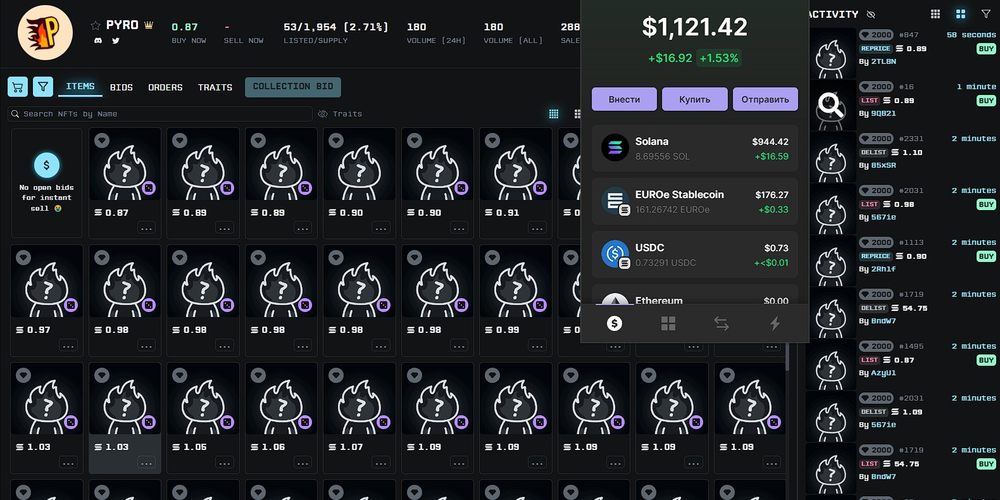
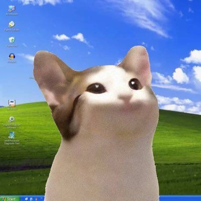
Забавная история. Я так торопился и нервничал при продаже, что выставил три NFT в 10 раз дешевле их цены, и их сразу забрали. В итоге заработал $300 вместо возможных $600. В наушниках тогда играла «Take A Slice», и мы с напарником до сих пор вспоминаем этот момент и смеёмся. С тех пор всегда проверяю цену перед подтверждением сделки.
Tensor ↗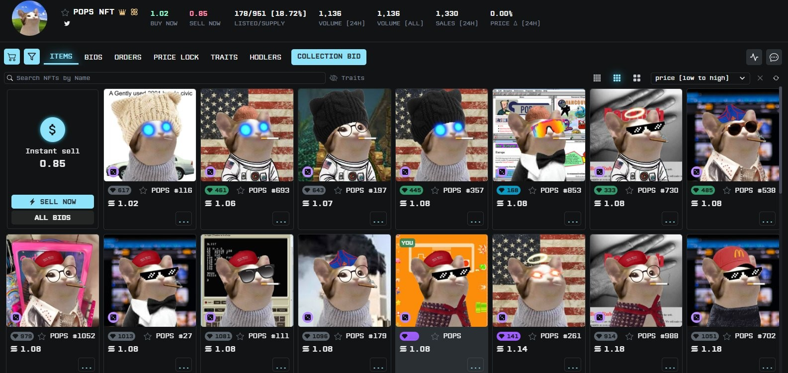
Airdrops
Airdrop — получение монет за различные задания.
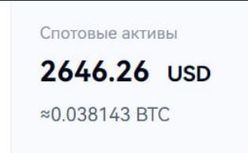
Получил airdrop токена $PIZZA за активность на UniSat: забрал дроп с четырёх кошельков, по 100 токенов на каждый, всего 400. 27 мая на OTC-рынке токен стоил около $0.5, а продал я на OTC по средней цене $6.6, в 13 раз дороже. Кошельки были общие с напарником, прибыль поделили.
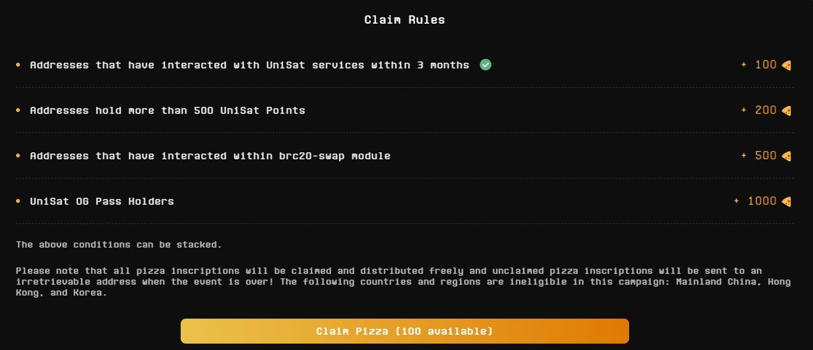
Получил airdrop токена $TNSR от NFT-маркетплейса Tensor. Токены раздали тем, кто активно торговал на платформе: я регулярно покупал и продавал там NFT.
CoinMarketCap ↗Получил airdrop токена $JUP. Я покупал токен JUP, а позже проект объявил раздачу для всех, кто его покупал, и я попал в их число.
CoinMarketCap ↗DAO
Создал и вёл больше 10 собственных DAO на Subber.
DAO — сообщество вокруг проекта.
Subber — платформа, где такие сообщества регистрируются.
DAO могут запрашивать коллаборацию у других проектов, чтобы проект выделил whitelist для участников их сообщества. Это был один из способов получения whitelist.
Итог
Деньги с Tensor и Blob я потратил на компьютер, который стоит на фото. Ещё купил подарки близким: папе часы, маме серьги. Весной 2025 года накопил и купил себе iPhone. Остальное тратил на жизнь. Деньги быстро заканчивались, потому что я предпочитал больше зарабатывать, чем экономить, и искал новые заработки.
Отдельное спасибо маме: она всегда меня поддерживала и давала в долг деньги для инвестиций, потому что просто так брать её деньги я не хотел.
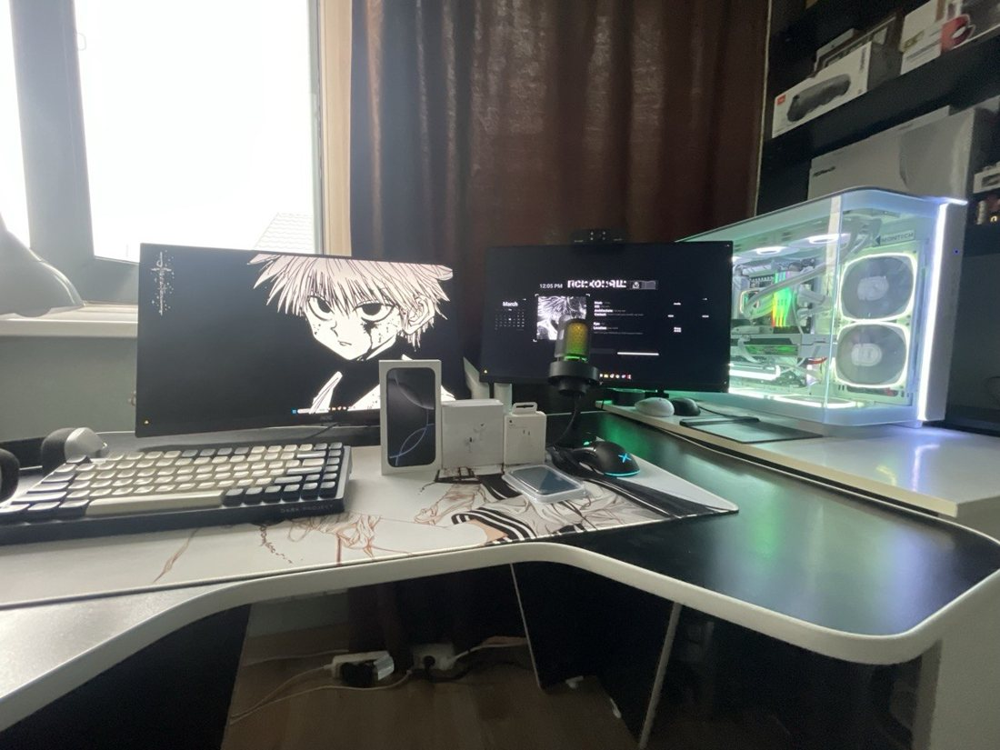
Навыки
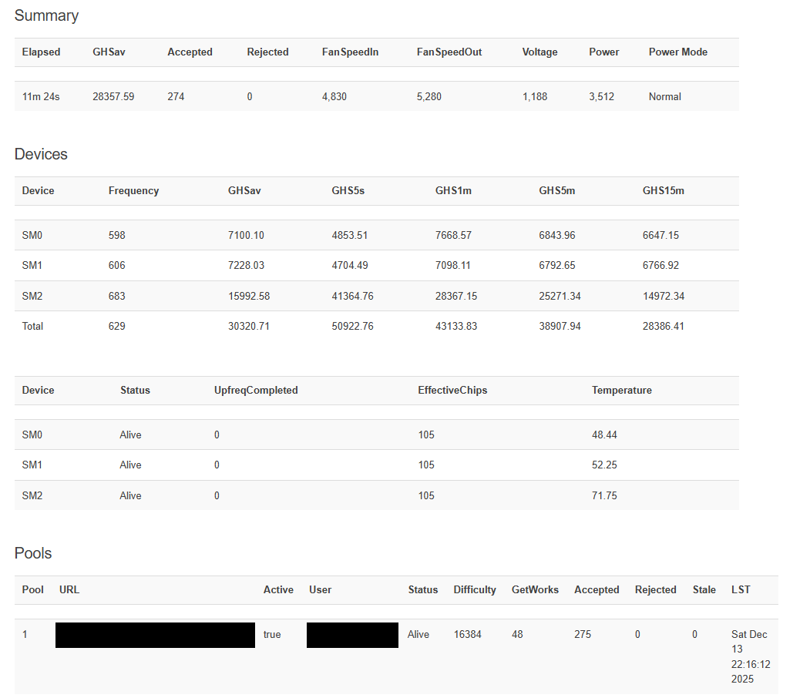
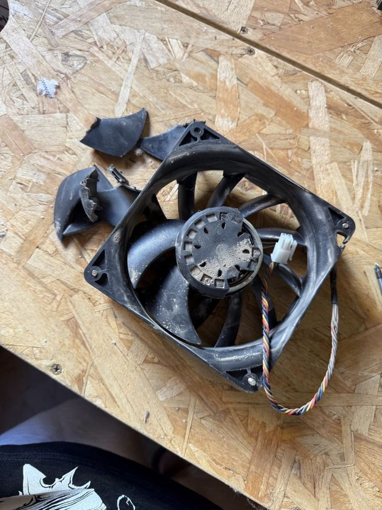
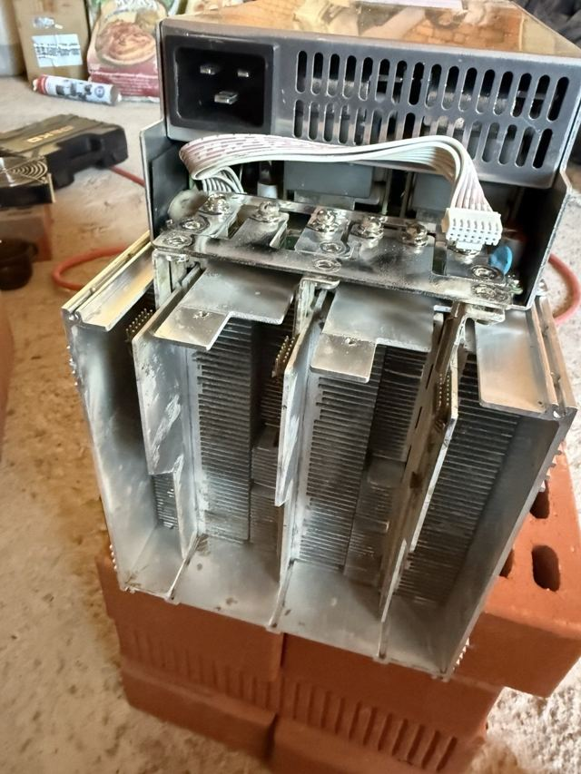
Настройка асиков, пул ViaBTC, мониторинг через BTC Tools. Время от времени продувал их компрессором, а иногда полностью разбирал, чтобы почистить тщательнее. Кулеры иногда ломались, и я их менял.
Покупаю и продаю NFT на Solana, Bitcoin и Ethereum. Получаю их по whitelist и на минте, потом перепродаю на вторичном рынке. Работаю с маркетплейсами Tensor, Magic Eden и OpenSea.
TensorMagic EdenOpenSeaУправлял примерно тысячей аккаунтов Discord и небольшой фермой Telegram.
ComfyUI — программа, где генерацию картинок собирают из блоков, соединённых линиями (как на скриншоте). Я настраивал такие схемы и генерировал изображения, которые выставлял на Patreon: на нём люди платят подпиской за контент автора.
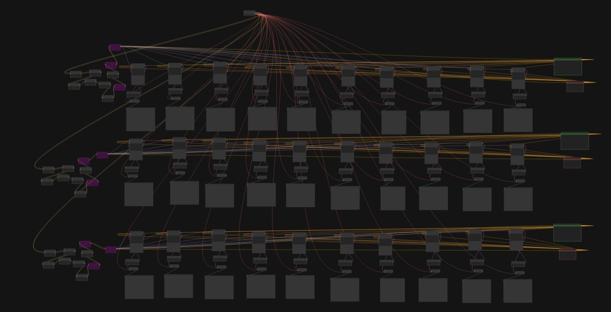
Вместе с напарником задумали запустить бренд футболок с аниме-принтами. Наняли художника, получили готовые эскизы. Потом обзванивали поставщиков в разных городах: искали тех, кто поставит оптом недорогие футболки плотностью 180–200 г и сможет сделать DTF-печать. Выяснилось, что никто не печатает большой принт на всю футболку недорого: могли только маленький и дорого. Мы пришли к выводу, что нужен свой DTF-принтер, но на него не хватило бюджета, поэтому до запуска мы не дошли. Опыт полезный: поняли, из чего складывается производство одежды.
Монтирую в CapCut. На всех днях рождения я оператор: новые знакомые так меня и называют.
Занимаюсь уличным воркаутом с 6-го класса. На видео — из последнего, что я делал.
Люблю бегать на большие расстояния. Желание обычно появляется спонтанно, а цель почти всегда большая.
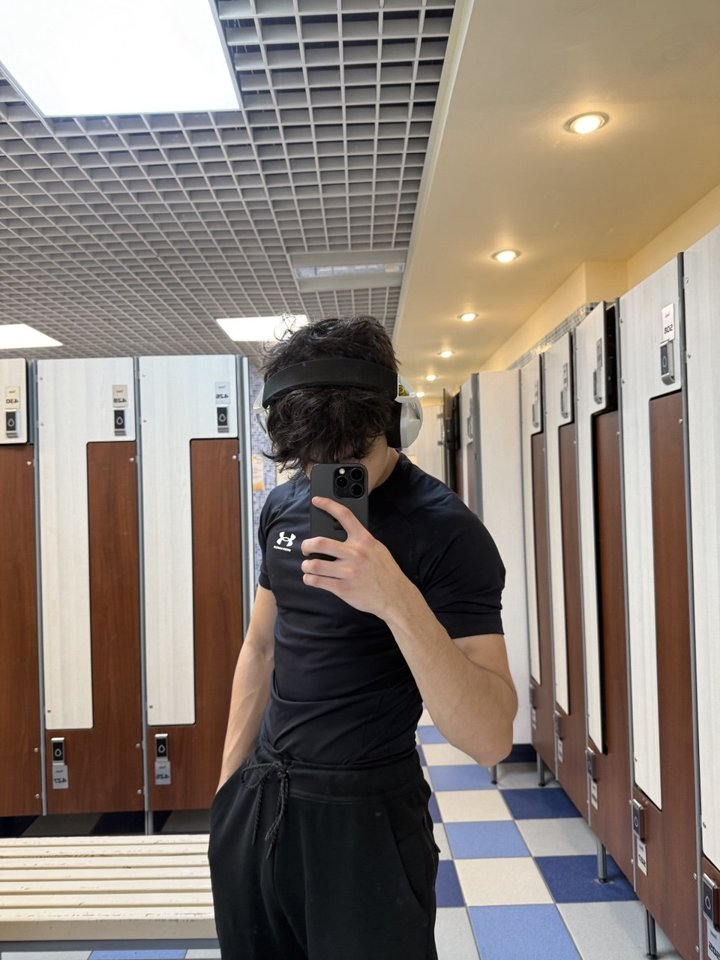
Иногда посещаю спорт-зал. Занимаюсь без тренера: технику и упражнения изучал сам по материалам из интернета.
Также занимался плаванием.
Ещё одно моё любимое занятие. Вожу довольно хорошо. Мне нравится скорость, особенно когда на ней нужно обходить препятствия. Кататься по прямой дороге неинтересно: люблю, когда надо следить за дорогой, объезжать кочки и на скорости входить в поворот.
Выступление на школьном концерте «Весенний аккорд 2023». Посередине на басу — я.
Достижения
1 место на IV Республиканских соревнованиях UCMAS в категории Higher B (2020). Top 10 и Top 20 на World Online Olympiad Abakus 2021.
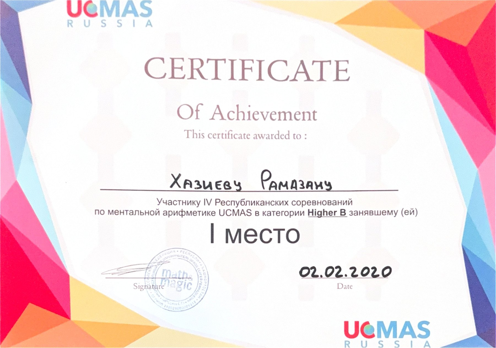
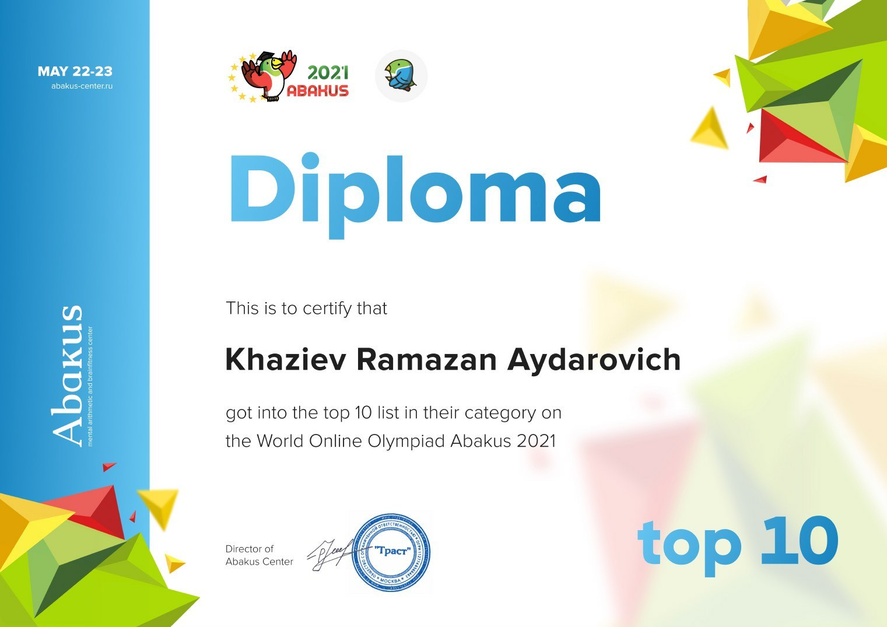
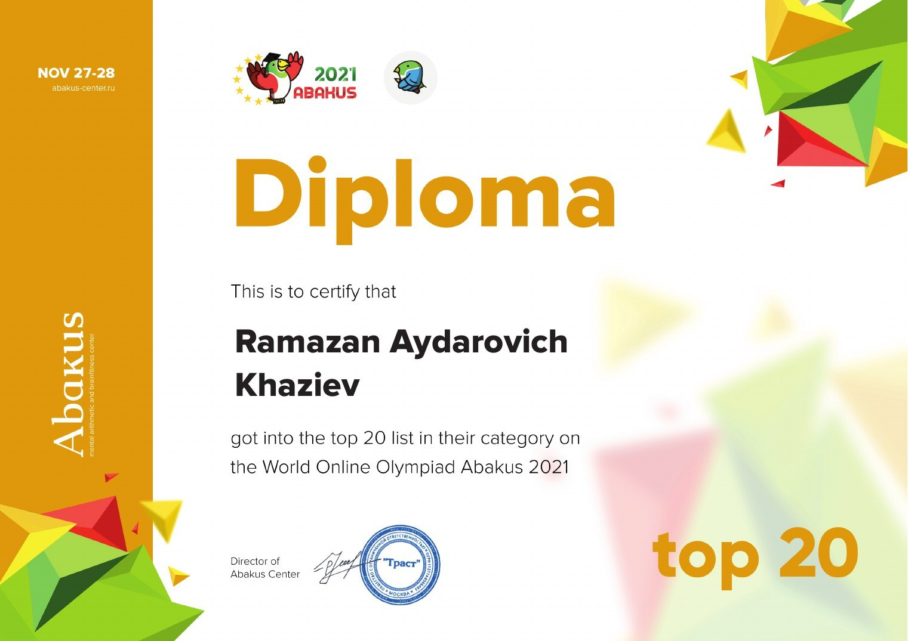
Интервью:
Открыть на YouTube с 2:34 →